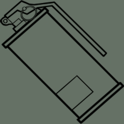

ARMAS DENTRO DE LA SAGA
HALF LIFE:
palanca:
La Palanca, también llamada Barra o Diablo, es la principal arma cuerpo a cuerpo y es el arma emblema de Gordon Freeman. Es la primera arma adquirida en Half-Life, que sirve como un arma cuerpo a cuerpo y también se utiliza como una herramienta para romper cajas de suministro abiertas y despejar obstáculos destructibles. Es la principal arma cuerpo a cuerpo en el arco de la historia de Half-Life y la única arma cuerpo a cuerpo en el marco de la historia de Half-Life 2, que es ampliamente considerada como el arma emblemática de la Saga Half-Life, quizás casi tan famoso como el propio Gordon Freeman cuando se refiere a Half-Life.
glock 17:
La Glock 17, también conocida como la Pistola 9mm, es un arma que aparece en Half-Life y sus expansiones. Es el arma estándar de la edición utilizada por los guardias de seguridad de Black Mesa, es una de las armas más utilizadas en la serie. Puede ser utilizada en modo semiautomático o automático, La Glock 17, también conocida como la Pistola 9mm, es un arma que aparece en Half-Life y sus expansiones.
Colt Python:
La Colt Python es un revolver de munición .357 Magnum que es además una poderosa arma de fuego, más precisa y potente que la USP Match o la Glock 17, esta aparece en la mayoría de los títulos de la Saga Half-Life, Cuenta con cerca de una precisión perfecta, pero disparar rápidamente hará que la precisión disminuya de manera significativa debido a la cantidad de retroceso del arma.
Desert Eagle
La Desert Eagle es un arma que aparece en Half-Life: Opposing Force y la primera arma de fuego adquirida en el juego. Es el arma estándar de los soldados HECU y algunos guardias de seguridad de Black Mesa, La Desert Eagle es una poderosa arma que tiene capacidad para siete balas. Aunque en cierto modo similar a la del revólver Colt Python, a primera vista, hay una gran diferencia entre ellas, la Desert Eagle cuenta con dos modos de disparo. La primera de ellas, automática, es el modo de disparo principal. Se dispara mucho más rápido, pero es muy inexacta. El segundo modo se activa pulsando la tecla de disparo alternativo. Esto activa un láser que hace que el arma sea mucho más precisa, pero disminuye la tasa de fuego, aunque permanece más rápido que la Colt Python.

M4A1:
M4A1, conocida simplemente como Rifle de Asalto o M4, es un arma que aparece en Half-Life y sus expansiones con las texturas en alta definición, reemplazando al MP5. Es el arma principal utilizada por la HECU, es un arma automática con una alta cadencia de fuego. También está equipada con un lanzagranadas M203 que aumenta su eficacia, Las Balas de la M4 alcanzaran un objetivo tan pronto como el arma se dispara. Esta utiliza la misma munición que la Glock 17. El lanzagranadas adjunto dispara poderosos explosivos que explotarán de forma automática al golpear el suelo. No necesita ser recargado, por lo que el jugador puede disparar granadas como quiera hasta que se quede sin munición.
mp5:
MP5, conocida simplemente como Subfusil o SMG, es un arma que aparece en Half-Life y sus expansiones. Es el arma principal utilizada por la HECU, es un arma automática con una alta cadencia de fuego. También está equipada con un lanzagranadas M203 que aumenta su eficacia, Las balas de la MP5 alcanzarán un objetivo tan pronto como el arma se dispara. Esta utiliza la misma munición que la Glock 17. El lanzagranadas adjunto dispara poderosos explosivos que explotarán de forma automática al golpear el suelo. No necesita ser recargado, por lo que el jugador puede disparar granadas como quiera hasta que se quede sin munición.
spas-12:
La SPAS-12 HECU es una poderosa escopeta que dispara por proyectil un grupo de perdigones de plomo distribuidos en un patrón cónico. Primeramente utilizada por los Soldados HECU, es usable por todos los personajes jugables de Half-Life y sus expansiones, esta contiene 8 disparos y 125 cartuchos, Esta escopeta tiene dos modos de disparo. El primer modo dispara cuatro granos con un rango de propagación medio, utiliza un proyectil y tiene bajo retraso entre disparos, mientras el modo secundario dispara 8 granos en un rango de propagación mas grande y usando dos proyectiles, pero teniendo un retraso más largo entre disparos.
ballesta:
La Ballesta de Black Mesa es un arma de largo alcance que aparece en Half-Life. Es muy eficaz contra objetivos a distancia, pero es difícil de utilizar contra enemigos cercanos o en contra de enemigos que se muevan rápido debido a su muy lento tiempo de recarga y la baja velocidad del tiro. El botón principal dispara una flecha, el gatillo secundario activa la mira de larga distancia, enHalf-Life, la primera ballesta es adquirida por el jugador durante el capítulo "Captura" para eliminar al ictiosaurio.
rpg hecu:
Granada Propulsada por Cohetes HECU, también conocida simplemente como RPG HECU, es un lanzacohetes guiado por láser, eficaz en la destrucción de objetivos en movimiento e inmóviles. Aparece en Half-Life y sus expansiones, el RPG dispara un poderoso cohete que tiene la posibilidad de ser guiado con un láser o sin el, los cohetes pueden encontrarse en las áreas controladas por la unidad HECU.
cañon tau:
El Cañón Tau, también conocido como el XVL1456, es un arma de energía experimental introducida en el capítulo de Half-Life, Ética Dudosa, en el segundo piso del laboratorio de investigación biológica avanzada. Debido a su resistencia y versatilidad, es considerado por algunos como la mejor arma en el juego. Si el jugador decide no recogerla en el Laboratorio de Investigación, se puede obtener en el almacén de suministros en el Complejo Lambda, La munición de uranio-235 es compartida con la Pistola de Gluones, el Cañón Tau es un arma desarrollada por científicos de Black Mesa.
pistola de gluones:
La Pistola de Gluones, o Desestabilizador Quantum, es un arma experimental que dispara un haz brillante de energía capaz de vaporizar casi cualquier cosa que alcance, La Pistola de Gluones fue desarrollada en el Complejo Lambda, donde fue descubierta por Gordon Freeman,Debido a que el científico a cargo no estaba dispuesto a usarla en seres vivos, el estima que Freeman no parece tener problemas matando y le da el arma a él.
mano colmena:
la mano colmena o El Hivehand, es un arma orgánica usada por los Alien Grunts de Xen y Gordon Freeman, El arma dispara pequeños organismos similares a insectos llamados "avispas", a una velocidad constante, se puede encontrar sin usuario en tensión en la superficie
granadas mk2:
La Granada Mk 2 es un arma aparece en Half-Life y sus expansiones, Es una granada de mano de fragmentación, que explota luego de cinco segundos de haber retirado la clavija de la granada, La explosión tiene un radio de tamaño mediano, y cuanto más cerca de la explosión esta un enemigo, más daño sufrirá. Los enemigos asesinados por la granada suelen explotar en pedazos, dependiendo de la magnitud del daño que sufren, La granada es utilizado por la HECU y los Comandos Negros para eliminar enemigos.
carga C4:
La Carga C4 también llamada Carga Satchel es una bolsa de demolición con explosivos que aparece en Half-Life y sus expansiones. Es más destructivo que la Granada Mk 2 y puede ser detonada a distancia por un detonador a control remoto, Como son más grandes y más pesadas que las granadas de mano, no pueden ser lanzadas lejos: lo que se compensa con una explosión más grande, se pueden encontrar en la Armería Topside durante "Tensión en la Superficie".
Mina Láser HECU
La Mina Láser de la Unidad de Combate en Entornos Peligrosos, comúnmente conocida como la Mina Láser HECU, es un explosivo de alta tecnología, que emite un láser que cuando se atraviesa, hace que la mina a explote, Las minas láser se encuentran al final del capítulo Foso Explosivo de Half-Life, Estas minas están fijadas a las paredes y proyectan un haz de láser. Si el haz láser es interrumpido, la mina detona en una explosión similar a una carga explosiva.
snarks:
El Snark es una criatura pequeña, roja y bulbosa, con un único gran ojo verde y una mandíbula similar a una pinza. Los Snarks normalmente son criaturas que muestran pocos signos de inteligencia, sin embargo, si ven a cualquier ser viviente que no sea un Snark, de inmediato comenzarán a atacarlo, Si los Snark no encuentran un humano, atacarán al que los lanzó. Por eso debe haber alguien cerca para lanzar al Snark. Los Snark pueden ser eliminados con un simple golpe de palanca, o con un disparo de pistola.
llave stillson:
La Llave Stillson es la primera arma de Adrian Shephard en Half-Life: Opposing Force, luego de su llegada a Black Mesa. Se puede encontrar en el comienzo del capítulo Bienvenido a Black Mesa junto a una caja de herramientas y algunos cables sueltos, La llave Stillson es un arma cuerpo a cuerpo de gran alcance que causa más daño que el Cuchillo de Combate y la Palanca.
cuchillo de combate:
El Cuchillo de Combate es un arma cuerpo a cuerpo que aparece en Half-Life: Opposing Force y es utilizado por el Cabo Adrian Shephard, Puede encontrarse sumido en la parte trasera de un Vortigaunt muerto en una cueva, y más adelante en una oficina antes de llegar al Complejo Lambda. Su apariencia es similar a la de la clásica cuchilla KA-BAR y la OCK-3S Bayonet Sólo aparece en Opposing Force. Puede encontrarse por primera vez en el capítulo "Bienvenidos a Black Mesa", clavada en un Vortigaunt muerto.
gancho barnacle:
El Gancho Barnacle, también conocido como Espécimen 1176, es un Barnacle que puede ser utilizado como un arma y un gancho en Half-Life: Opposing Force. Su lengua puede ser disparada para adherirse a objetos orgánicos, El Barnacle puede ser forzado por el usuario para que expulse su lengua la que es más útil para engancharse a las esporas del Spore Launcher pegadas a los muros, de vez en cuando tomando munición para el arma, y tirando al jugador a lugares que de otro modo serian inaccesibles, También es útil como herramienta de combate cuerpo a cuerpo, muy útil para devorar Headcrabs y cucarachas Shock Roach
lanzador de esporas:
El Spore Launcher, también llamado Lanzador de Esporas es un arma biológica vista en Half-Life: Opposing Force. Fue utilizado por Adrian Shephard durante el Incidente de Black Mesa, se trata de un ejemplar extraterrestre anfibio que se alimenta con los racimos de Frutas de Esporas y después se le puede forzar a expulsarlos con propiedades explosivas, esta arma contiene 5 disparos y 20 municiones
cucaracha de choque:
la curcaracha de choque o Shock Roach es un arma biológica que aparece en Half-Life: Opposing Force. Es utilizado sobre todo por los Shock Troopers de la Raza X, pero también puede ser recogida y utilizada por los seres humanos, esta arma contiene 10 cargas de plasma que se regeneran automaticamente.
rifle M40A1:
El Rifle de Francotirador M40A1 es un arma utilizada por los Francotiradores HECU en Half-Life y por los Comandos Negros en Half-Life: Opposing Force. Se trata de un rifle de gran alcance que puede matar a enemigos en un solo disparo. Tiene una mira telescópica unida a él para que sea fácil atacar objetivos a largo alcance. Presentado por primera vez en Half-Life, el nombre del modelo del rifle fue dado en Opposing Force, esta contiene 5 disparos y 15 balas.
ametralladora M249:
La M249 es una poderosa arma automática utilizada por la HECU, esta arma tiene una alta cadencia de tiro, casi igual a la de una MP5, su potencia es increíble, pudiendo acabar con enemigos bastante rápido, lo malo es que su retroceso es muy alto, y su precisión no es muy buena en largas o medias distancias, y ademas al disparar, el protagonista ira retrocediendo hasta dejar de disparar. También sus balas se gastan muy rápidamente, y su tiempo de recarga es largo, esta arma contiene 50 disparos y 200 balas.
Cañón Desplazador:
El Cañón Desplazador, también conocido como el XV11382, es un arma de teletransporte portátil desarrollada por Black Mesa antes de el Incidente de Black Mesa. Un Cañón Desplazador tiene dos modos diferentes, el primero genera un campo de desplazamiento (o portal) por delante del usuario, permitiendo la teletransportación de un solo objeto o ser. El modo alternativo genera un portal detrás de los emisores, teletransportando a el usuario con el arma y dando una cantidad significativa de daño a cualquier ser alrededor antes de que ocurra el teletransporte.
HALF LIFE 2:
Manipulador de Campos de Energía Cero:
El Manipulador de Campos de Energía Cero, más comúnmente conocido como la Pistola de Gravedad, es un arma de tipo de energía de rayo tractor que fue originalmente diseñado para manipular materiales peligrosos, pero, como Alyx dijo, se utiliza principalmente para levantar objetos pesados. En su núcleo posee una sustancia que parece ser un Cristal Xen. Es presentada a Gordon Freeman por Alyx Vance poco después de su llegada a Black Mesa Este, la Pistola de Gravedad pronto se convierte en una herramienta muy valiosa en el arsenal de Gordon.
Rifle de Pulso:
El Rifle de Pulso Edición Estándar Overwatch, también conocido como Rifle de Pulso o AR2 (Rifle de Asalto 2), es un poderoso rifle de asalto de Energía Oscura y munición de pulsos fabricado por el Combine. El Rifle AR2 es esencialmente una variante Combine de rifles de asalto actuales, repartido comúnmente a Soldados de la Vigilancia y el Elite Overwatch, El Rifle de Pulso cuenta con un cartucho de 30 rondas, que se vuelve a cargar con un mecanismo automático integrado en el arma. Un lanzador de Esferas de Energía Oscura esta integrado al arma; la esfera es capaz de desintegrar casi cualquier cosa que toca. En el cuerpo del arma se puede ver el código de alfanuméricos "V952", que también se encuentra en varios otros dispositivos Combine.

RPG de la Resistencia:
Granada Propulsada por Cohetes de la Resistencia, también conocido simplemente como el RPG de la Resistencia o simplemente como RPG, es un lanzacohetes utilizado por los Rebeldes contra las fuerzas Combine. Es utilizado principalmente por La Resistencia para derribar Naves de Descenso Combine, Naves de Guerra Combine, Helicópteros-Cazadores, Striders y a veces incluso APCs, El RPG de la Resistencia es un arma muy potente y útil, el RPG tiene una guía láser que puede guiar con precisión el cohete mientras está en vuelo, por lo que es ideal para hacer tiros de precisión a varias distancias. El cohete, incluso puede ser re-direccionado para girar completamente alrededor si no llega a su objetivo, o maniobrar para evitar las defensas enemigas.
Granada MK3A2:
La Granada MK3A2 viene equipada con una luz intermitente y temporizador roja que se activa cuando se lanza la granada. Esto es muy útil para el jugador, ya que le permite saber cuando una granada activa se encuentra cerca. La mayoría de los Soldados Combine llevan por lo menos una de ellas y las utilizan para eliminar y / o matar a los enemigos. Las MK3A2 sin lanzar también pueden ser recogidas por el jugador si es soltada por un soldado, Cuando son lanzadas, estas granadas de mano tienen un rebote bastante bajo, pero debido a su forma cilíndrica, van a rodar una distancia significativa si aterrizan sobre una superficie lisa, por lo que estos atributos se deben tener en cuenta a la hora de arrojarlas.

Ballesta de la Resistencia:
La Ballesta de la Resistencia es un arma de largo alcance que aparece en Half-Life 2 y sus Episodios. Es eficaz contra oponentes desprevenidos y distantes, pero es difícil de utilizar en combate cercano o en contra de oponentes que se mueven rápidamente debido a su recarga muy lenta y baja velocidad de tiro, Esta arma es estéticamente diferente a la Ballesta de Black Mesa. En primer lugar, es obviamente construida en base a chatarra en lugar de ser manufacturada, ya que es construida de varias partes depuradas. En segundo lugar, las barras no tienen punta de flecha, sino que son barras de acero al rojo vivo de cerca de 30 centímetros de largo. En tercer lugar, el arma no tiene un cartucho de munición. Después de ser disparada, el alambre de tensión debe ser tirado hacia atrás para poder colocar la siguiente barra, que el usuario coloca directamente sobre el arma. Por último, el dispositivo es activado. Lo que parece ser una pequeña batería de linterna Rayovac de 12V está unida a la parte inferior que, aparentemente, funciona con corriente eléctrica cuando reposa sobre el mecanismo de disparo, Esto tiene el efecto de sobrecalentamiento de la barra de acero. Esto se puede notar al colocar la barra de acero en la ballesta, lo cual emitirá algunas chispas.
Ferópodos:
Los Ferópodos (juego de palabras entre Ferómona y Pod, de portátil), también conocida como Cebo de Insectos o simplemente Cebo por La Resistencia, son sacos glandulares provenientes de las Hormigas León Guardia y son utilizadas para controlar a las Hormigas León, Los Ferópodos se encuentran naturalmente dentro del cuerpo de las Hormigas León Guardia, lo que les permite controlar a las Hormigas León menores. Estos pueden ser extraídos y utilizados por un individuo para comandar a las Hormigas León de una manera similar, Los Ferópodos son muy valorados en las zonas infestadas de Hormigas León, y algunos miembros de La Resistencia ubicados a lo largo de la costa deben recorrer largas distancias hasta llegar al Campamento Vortigaunt donde se pueden obtener suministros.
Combine spas-12
Combine SPAS-12 es una potente escopeta manual que dispara perdigones en un patrón en forma de cono. Es utilizado por diversos personajes y NPCs en Half-Life 2 y sus episodios, La SPAS-12 es entregada por primera vez a Freeman por el Padre Grigori en el capítulo de Half-Life 2 "No Vamos a Ravenholm...". La SPAS-12 dispara un cartucho si se utiliza el disparo principal, y disparará dos tiros a la vez cuando se pulsa la tecla de disparo alternativo. El fuego alternativo utiliza dos cartuchos de escopeta a la vez. Sin embargo, cuando Gordon bombea la escopeta, sólo 1 cartucho se expulsa, Esta arma es utilizada tanto por los Rebeldes y los Soldados Overwatch, que tienen un uniforme diferente al de los soldados comunes.
MP7:
La MP7, también conocida como SMG1, es una subametralladora compacta, totalmente automática utilizada por los Combine y La Resistencia, Tiene dos modos de fuego; fuego primario que es completamente automático, con una alta tasa de fuego, pero poca precisión, mientras que el disparo secundario utiliza un Lanzagranadas M203, La MP7, junto con el Rifle AR2, son las armas Combine más utilizadas y, a menudo son utilizadas por Soldados Overwatch y miembros de Protección Civil. También es ampliamente utilizada por los miembros de La Resistencia como su arma de fuego estándar.
USP match:
La USP Match, también conocida como la Pistola 9mm o simplemente como Pistola, es una pistola semiautomática y la primera arma de fuego que Gordon Freeman adquiere en Half-Life 2, La USP Match parece ser el arma estándar de los Combine, y con frecuencia es utilizada por los miembros de Protección Civil. La Pistola es un arma fiable y precisa que tiene un gran cargador. Una de las características más destacadas del arma es un gran compensador de boca que reduce que el arma se eleve mucho, El jugador adquiere la USP Match en el inicio del capítulo de Half-Life 2 Ruta del Canal, después de derrotar a los miembros de Protección Civil que estaban golpeando a un ciudadano en un túnel de mantenimiento cerca de la Estación de Tren de Ciudad 17.
Dispositivo Magnusson:
El Dispositivo Magnusson, también conocido como el Strider Buster, es un arma de La Resistencia desarrollada por Arne Magnusson, el líder de White Forest, El Dr. Magnusson creo el Dispositivo Magnusson para poder abatir a los Strider, debido a que los RPG de la Resistencia no resultan del todo eficaces y esto lleva consigo muchas bajas. Sin embargo la única manera de utilizar los Dispositivos Magnusson es con la Pistola de Gravedad, debido a que deben adherirse a los Striders y son muy pesados, Debido a los limitados recursos disponibles durante el gobierno del Combine sobre la Tierra, el dispositivo tuvo que utilizar materiales y tecnologías simples y convencionales que se encuentran en las ruinas; Sin embargo, es probable que los componentes electrónicos dentro del dispositivo se basen en maquinaria Combine. El dispositivo utiliza puas afiladas espaciadas alrededor de su circunferencia para perforar el caparazón de un Strider y adherirse a el.
Ir a la pagina:
1 2 3 4 5 6 7